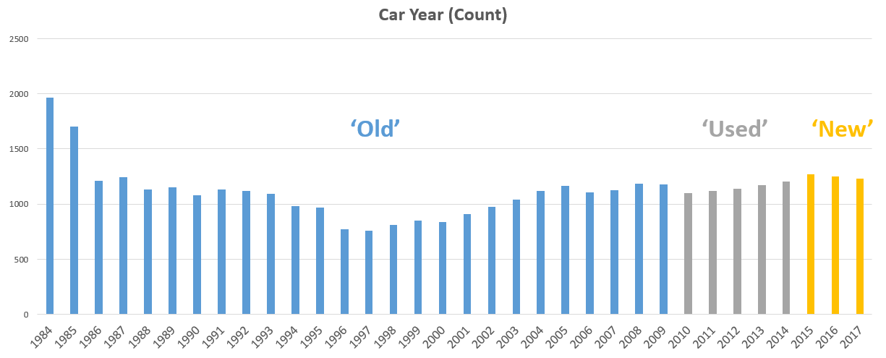
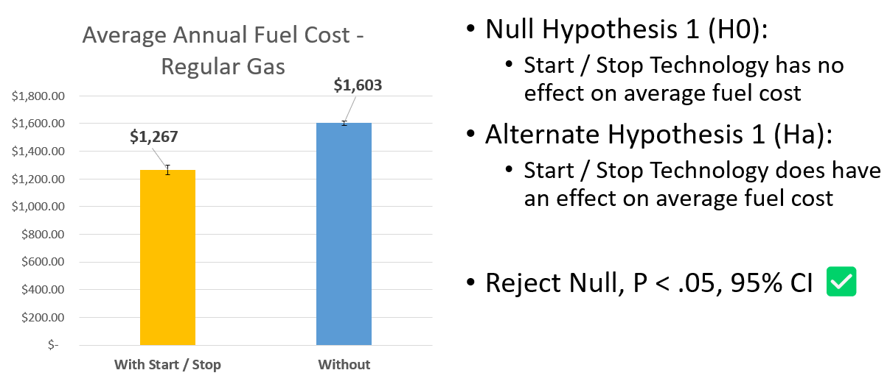
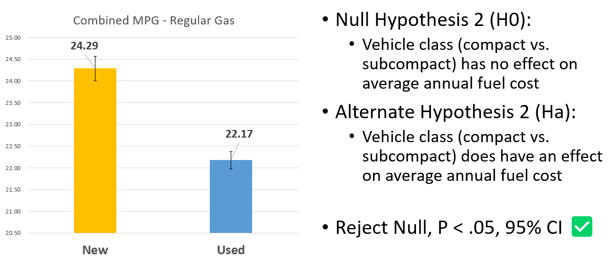
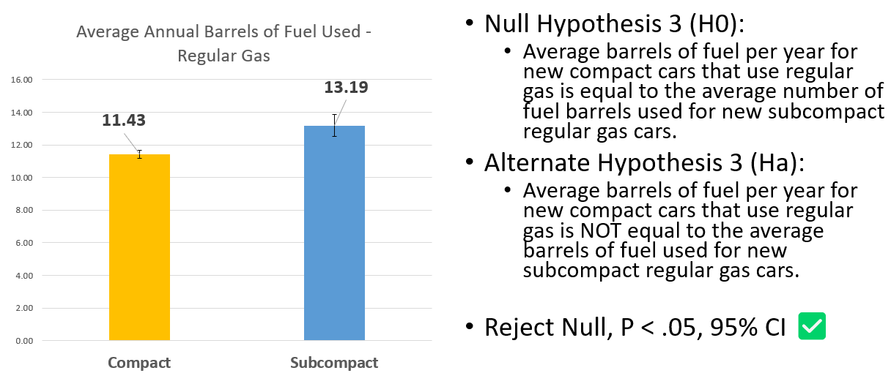
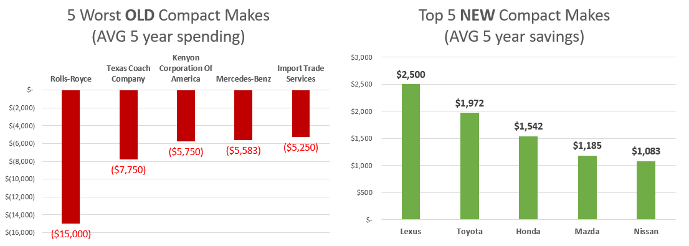

Statistical Significance | Fuel Economy

Project Summary 🗒️
🧭- Project scenario
- Provide data-backed analysis and recommendations around vehicle fuel economy
- Client is interested in vehicle types, manufacturers, and technical specs
- They want to understand how those might drive fuel economy and annual fuel costs
| Project Objective |
|---|
| Identify and conduct statistical tests on factors that drive fuel economy and annual costs |
📂- Deliverables
Click the icons or text below to see my project files and deliverables
| PowerPoint | Excel |
|---|---|
 |
 |
🔧- Methods
| Research Questions |
|---|
| Does the Start / Stop Technology make a significant difference in fuel costs / consumption? |
| Does the car’s “age” or model year have a significant difference in fuel economy? |
| How significant is the car’s class (car type: minivan, truck, compact…) in the consumption of fuel? |
- Most vehicles use regular gas as a fuel type -> focus on regular gas vehicles
- Regular gas is convenient, and already has nationwide infrastructure
- Subcompact and compact vehicles are the most common classes -> focus on these car classes
- These two classes are the most popular and they are quite similar in specific metrics
- Car “age” determined by the model year -> focus on new vs used

🔍- Findings
Start Stop Technology - Fuel Cost

Car Class - Combined MPG

Car Age - Used Fuel Quantity

5 Year Savings and Spending

💡- Recommendations
- For fuel economy and savings, without sacrificing the convenience of regular gas, use cars with Start / Stop Technology
- Prioritize using newer cars (2015 and newer) as on average they have a significantly better combined MPG than older counterparts
- Implementing the above and using the compact vehicle class will offer the best savings in terms of fuel economy